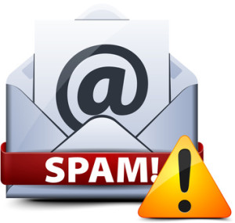

O QUE É SPAM?
 Spam é um termo utilizado para o recebimento de email ou contatos não solicitados, porém muitas pessoas confundem esse termo com os spammers (que pratica SPAM), programas que são definidos para realizarem ataques.
PORQUE NÃO UTILIZAR A PORTA 25?
Para que um servidor ou PC comum possa enviar emails, ele precisa utilizar o protocolo SMTP, essa conexão utiliza uma porta e a mais utilizada pelos spammers (que pratica SPAM) era a porta 25 que é a padrão do SMTP, o problema dessa porta é que por ser uma porta padrão, os provedores de acesso a Internet e órgãos de controle da Internet, não conseguem fazer um controle mais detalhado do que possivelmente é SPAM (mensagens em massa) e o que é mensagen comum porém enviadas também em massa, mas para usuários que querem recebe-las.
PORQUE FOI BLOQUEADA NO BRASIL?
O Brasil é hoje o 5º país que mais envia SPAM sendo que ele já foi o 1º desse ranking, por isso com intenção de diminuir o SPAM feito por brasileiros ou pelo menos em redes brasileiras, o CGI (Comitê Gestor de Internet no Brasil) determinou que a porta 25 fosse fechada pelos provedores de acesso a Internet e a porta 587 passe a ser utilizada para SMTP, dessa forma a porta 25 ficará impossibilitada de ser utilizada e os programas spammers automatizados que utilizam essa porta não conseguirão mais enviar mensagens, diminuindo o numero de mensagens enviadas em massa pelo Brasil.
fonte: MUNDO HACKER